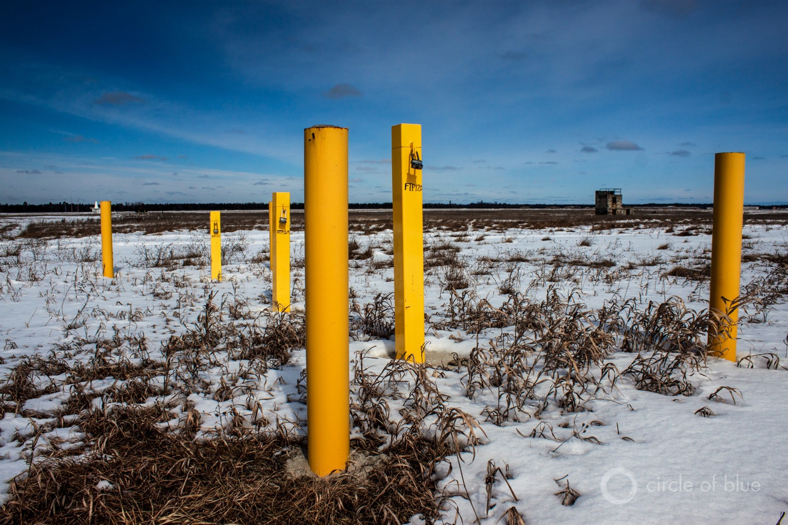
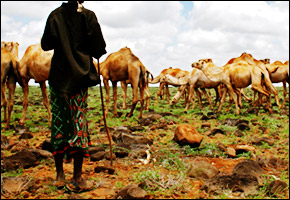
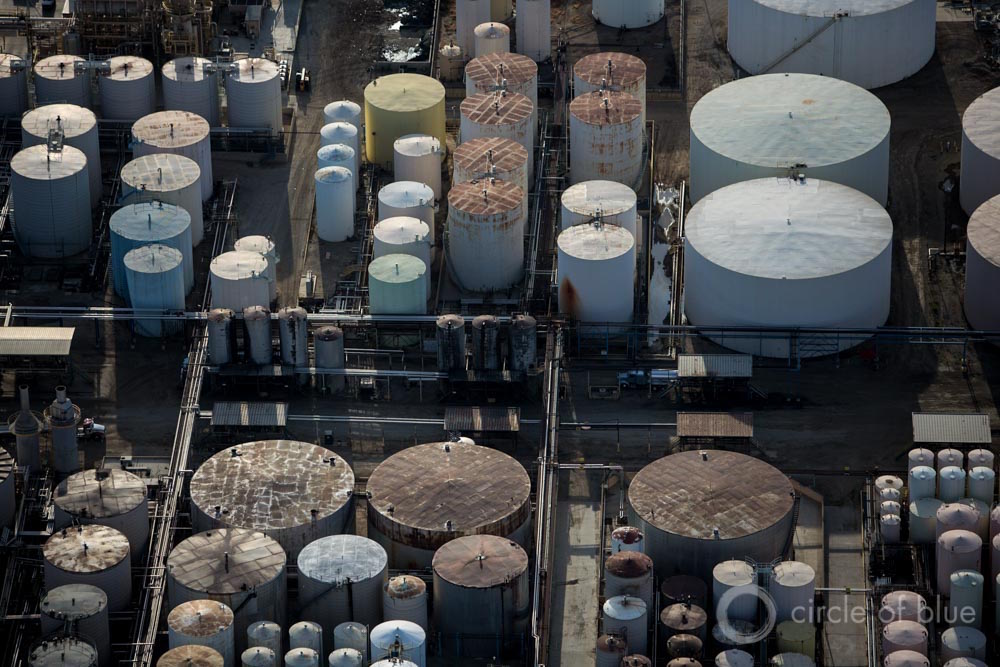

Infographic: Lake Urmia Drained By Water Diversions
The largest lake in Iran is shrinking rapidly, threatening tourism and health.
The surface area of Lake Urmia — a vast, shallow, saltwater lake in northwestern Iran — has declined 88 percent since the 1970s due to water diversions siphoning supplies away from the freshwater rivers that supply the lake, according to a study published in the
Journal of Great Lakes Research in March.Tourism in the region has fallen with the water levels, and serious health risks are on the rise as dust storms pick up salts from the exposed lake bottom and sweep them across towns and farm fields.
In the infographic below, the satellite images show the change in lake area between 1975 and 2015, while the graphs track changes in the lake’s water levels.
Posted On: 2015-06-12T00:00:00
Posted By: Kaye LaFond



Content Date: 2015-06-12
Download Date: 2021-05-12
Document ID: L0C04BO9L